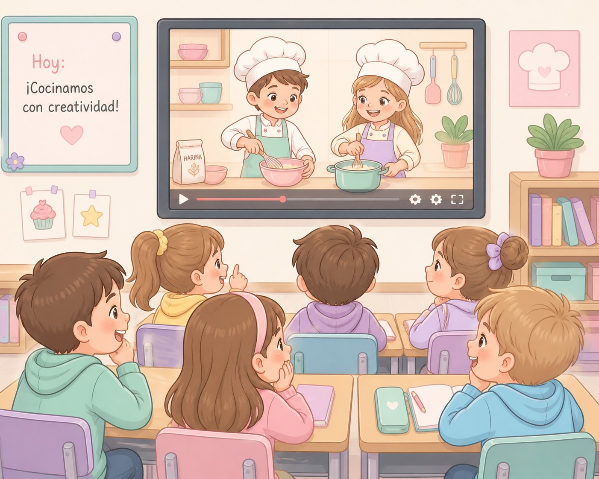

Texto
El proyecto se centra en el aprendizaje de las unidades de medida de capacidad y masa a través de una propuesta práctica cuyo producto final consiste en la elaboración de una receta y la grabación de un vídeo para compartirlo con todos los compañeros. Se trata de una actividad altamente motivadora y divertida, que conecta directamente con la vida cotidiana del alumnado.
Utilizando una metodología activa y adaptada a la diversidad del aula. Con las dinámicas cooperativas como el folio giratorio y el 1-2-4 favoreció el trabajo conjunto, la reflexión compartida y el intercambio de ideas entre el alumnado. Mi papel como guía del proceso permitió que cada estudiante se sintiera reconocido, implicado y partícipe de su propio aprendizaje.
En definitiva, esta experiencia educativa no solo permitió afianzar los contenidos relacionados con las unidades de capacidad y masa, sino que también contribuyó al desarrollo de competencias clave como el trabajo en equipo, la organización y la comunicación.
La aplicación de estrategias inclusivas, como la distribución de roles concretos dentro de los grupos, favoreció una participación más equilibrada y permitió que todo el alumnado, con independencia de sus características o capacidades, desempeñara un papel significativo en su propio aprendizaje.
Asimismo, las actividades prácticas como los Kahoots, la búsqueda de platos saludables y la elaboración de recetas, no solo aumentaron la motivación y el interés del alumnado, sino que también facilitaron la comprensión de conceptos más abstractos al vincularlos con experiencias reales y cercanas, como es el hecho de cocinar.
El carácter interdisciplinar del proyecto favorece un aprendizaje globalizado, integrando matemáticas (medidas), conocimiento del medio (transformaciones de los alimentos y alimentación saludable), lengua (comprensión y elaboración de recetas) y educación artística (diseño visual y presentación del recetario y del vídeo).
El diseño de este proyecto se basa en las conclusiones obtenidas en la rutina de pensamiento de la tarea 1.1, que consistió en la realización de un Kahoot centrado en las unidades de medida de masa y capacidad. El nivel seleccionado, 4º de Educación Primaria, es adecuado, ya que en este curso se introducen y consolidan de manera más sistemática las magnitudes de capacidad y masa, siendo fundamental afianzar estos contenidos mediante experiencias prácticas y significativas.
La temporalización permite un desarrollo progresivo del aprendizaje, comenzando con la exploración de ideas previas (Kahoot), continuando con actividades guiadas de práctica y culminando en un producto final relevante y motivador.
Además, el proyecto fomenta la implicación de las familias, ya que la elaboración de la receta y su grabación en vídeo deben realizarse en casa, fortaleciendo así el vínculo entre el entorno familiar y el escolar.

Imagen creada por la autora con DALL·E 3